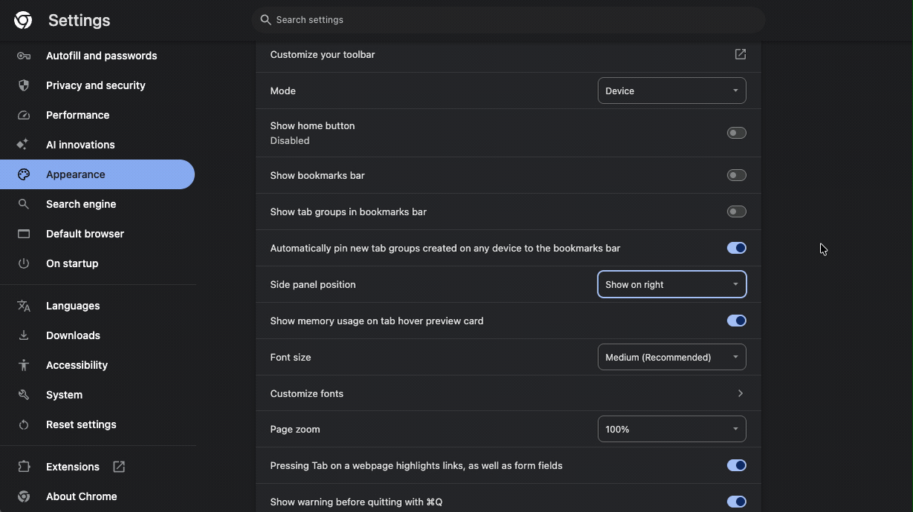
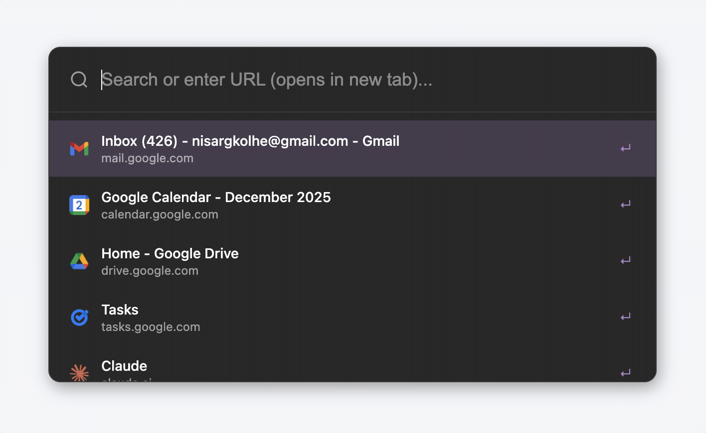

Move Sidepanel to Left
Arcify works best when the sidepanel is positioned on the left side of your browser.

How to change sidepanel position:
- Go to Chrome Settings (⋮ menu > Settings)
- Click on "Appearance" in the sidebar
- Scroll down to "Side panel position"
- Select "Show on left"
Note: This option might not be available in all Chromium-based browsers like Edge and Comet.
Set Up Keyboard Shortcuts
Configure keyboard shortcuts to quickly access Arcify features from anywhere in your browser.
How to set up keyboard shortcuts:
- Open Chrome Extensions page (chrome://extensions/shortcuts)
- Go to the keyboard shortcuts section
- Find Arcify and customize the shortcuts
Recommended Shortcuts:
- 🎯 Toggle Sidepanel: Cmd/Ctrl + S
- 📌 Quick Pin/Unpin: Cmd/Ctrl + D
Spotlight Search (Companion Extension)
Spotlight is a powerful search feature available as a separate companion extension.

Spotlight features:
- 🔍 Search across all your tabs and bookmarks
- ⚡ Quick tab switching with keyboard shortcuts
- 📚 Access to recent tabs and browsing history
- 🎯 Smart suggestions and autocomplete
Note: Spotlight is now a separate extension that works alongside Arcify. Install it from the Chrome Web Store to enable spotlight search and new tab override features.
You're All Set!
Here are the key shortcuts to help you get started with Arcify.
Ready to get started?
You can now use Arcify to organize your tabs into spaces, archive inactive tabs, and quickly search through your workspace. The sidepanel will remember your preferences and help you stay organized!